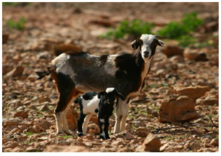

Las actividades económicas principales, eran las relacionadas con el sector primario.
•La agricultura era la principal actividad económica. Usaban herramientas rudimentarias (palos y cuernos de cabra) y crearon acequias para llevar agua a los cultivos. Los principales cultivos: trigo y cebada con los que hacían harina (gofio), que luego mezclaban con otros alimentos (miel,manteca...). Las cosechas las guardaban en cuevas que servían como almacenes. Otros cultivos eran las legumbres, el ñame.... •La ganadería fue muy importante, tanto la caprina, como las ovejas y los cerdos, de los que aprovechaban su leche, piel (para hacer tejidos) y carne, así como sus huesos para la elaboración de herramientas (punzones, anzuelos) y los tendones para coser .

Cabra Canaria
•Existían también otras actividades como la recolección de frutos como la yoya (el fruto del mocán), los dátiles y las moras., y raíces de helechos. Asimismo se dedicaban a la pesca y al marisqueo.Se han encontrado numerosos depósitos de conchas (concheros) en las islas. Hasta hace muy poco tiempo se había considerado que el impacto de las actividades de estas sociedades aborígenes sobre el territorio había sido leve y que había existido una relación de equilibrio entre el ser humano y su entorno. Sin embargo, varios estudios han demostrado que hubo cambios significativos en el medio natural, sino también en la desaparición de algunas especies, como resultado de la presencia y las actividades humanas, y de la introducción de nuevas especies de animales (cabra, oveja, cerdo negro, perros, etc.) y de semillas (trigo, cebada,habas, lentejas, arvejas, etc.), y también el hecho de acciones involuntarias, como la llegada de enfermedades, de parásitos y del ratón doméstico.
Asimismo, las actividades económicas basadas enel pastoreo, la caza y la recolección también provocaron desajustes importantes en los ecosistemas. Entre las especies de vertebrados extinguidas por la caza se encuentran: el lagarto gigante de Tenerife, las ratas gigantes de Gran Canaria y de Tenerife, las pardelas del malpaís, la codorniz gomera y el ratón del malpaís, entre otros. Por otro lado, la presencia de cabras y ovejas asilvestradas, pudo influir en la extinción de algunas especies vegetales. Además, el hábito de recolectar frutos, como madroños, mocanes, fayas o bicacareras también pudo provocar el retroceso de ciertas especies vegetales. Estudios recientes también señalan que durante la fase de poblamiento aborigen se produjeron la extinción de bosques, de carpe y de una especie de encina o roble, y la transformación o desaparición de ecosistemas completos muy diferentes a los actuales.